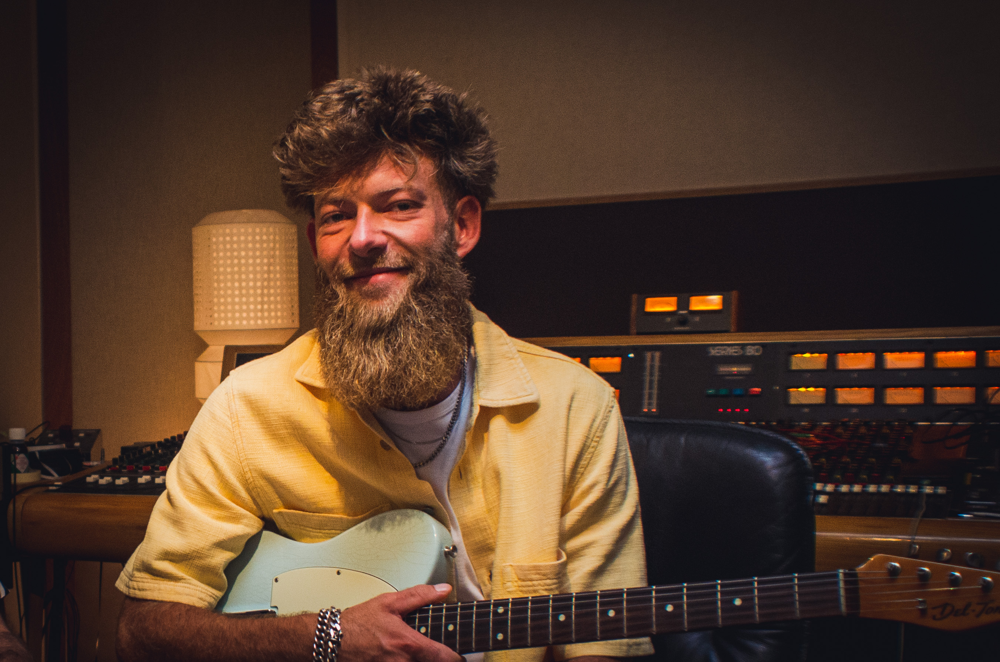

Composition · Music Production
Blending analogue warmth with modern detail to create immersive, artist-focused productions
Selected works and recent productions.
Tim van Veen is a composer, producer, and engineer based in Amsterdam. Focused on organic, lively textures and boutique productions, Tim crafts music with emotion, precision, and a deep attention to detail. Holding a bachelor’s degree with honours in Composition and Music Production, he brings the expertise needed to elevate any project to new heights. Having worked with artists and bands from a wide range of cultures and backgrounds, he knows how to communicate, adapt, and capture the best possible performance in every moment. As an in-house producer at The Lullabye Factory studios for over a decade, Tim has developed a broad and versatile skillset that transforms productions into immersive sonic experiences. Comfortable in vintage workflows—where tape machines remain at the center—yet guided by a forward-focused creative approach, he blends old-world charm with next-generation clarity into a sound that feels both timeless and contemporary. Looking to bring your next track to life? Let’s craft something immersive, expressive, and unmistakably yours.
Tim van Veen
Composer · Producer · Engineer
Amsterdam, NL
contact@tvvmusic.com